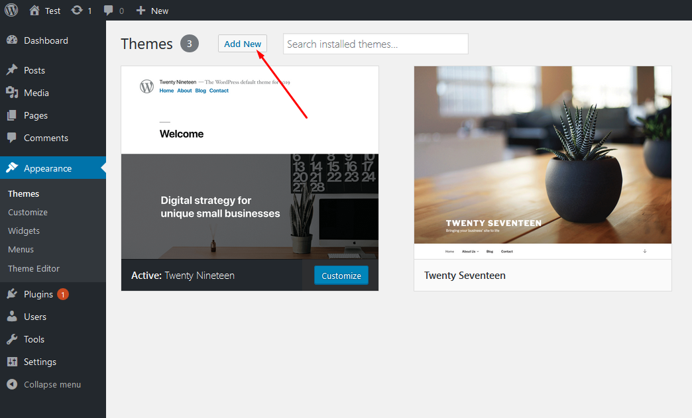
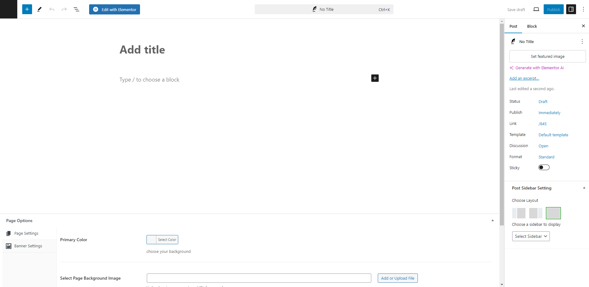
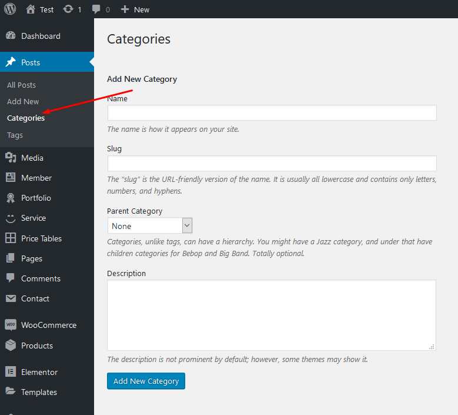

Welcome to Rifa – Rifa WordPress Theme Documentation.
- Item Name : Rifa - Online Lotto & Lottery WordPress Theme
- Created: 10 February 2025
- Item Version : v 1.0
- Author : Softivus
First of all, Thank you so much for purchasing this template and for being my loyal customer. You are awesome! You are entitled to get free lifetime updates to this product + exceptional support from the author directly.
This documentation is to help you regarding each step of customization. Please go through the documentation carefully to understand how this template is made and how to edit this properly.
Theme Requirements
To use Rifa, make sure your hosting provider is running the following software:
- WordPress 4.8 or higher.
- PHP 5.6 or greater. WordPress officially suggests to use PHP 7.4.
- MySQL 5.6 or greater.
Recommended PHP Limits
Many issues that you may run into such as: white screen, demo content fails when importing, empty page content and other similar issues are all related to low PHP configuration limits. The solution is to increase the PHP limits. You can do this on your own, or contact your web host and ask them to increase those limits to a minimum as follows:
max_execution_time 180memory_limit 128Mpost_max_size 64Mupload_max_filesize 32Mmax_input_time = 60max_input_vars = 3000
Also consider upgrading your PHP version to the latest version, the newer the better.
WordPress Information
To install this theme you must have a working version of WordPress already installed. If you need help installing WordPress, follow the instructions in WordPress Codex or you can watch the. Below are ll the useful links for WordPress information.
- WordPress Codex – general info about WordPress and how to install on your server
- First Steps With WordPress – general information that covers a wide variety of topics
- FAQ New To WordPress – the most popular FAQ’s regarding WordPress
Theme Installation
It’s easy to install Rifa. Just follow these steps, they won’t take much of your time.
- Download the theme zip file
- **All files & documentation **(full zip folder). You will need to extract and locate the installable WordPress file to upload when installing theme
- Log in to your WordPress Dashboard (Ex: http://yourwebsite.com/wp-admin).
- Navigate to Appearance > Themes.

-
Click on Add New and then Click on
Upload Theme .

- Click Add New, then click Upload Theme >
Choose File

- Navigate to the .zip file on your computer, then click Install Now
- When the installation complete, click Activate. You will be redirected to Themes page with Rifaactivated.
- Done.
Install theme via FTP
To manually upload your new WordPress theme, login with your credentials to your website and locate the wp-content folder in your WordPress install files. Upload the un-zipped 'sada' folder into the: wp-content/themes folder.
Once uploaded, activate the theme by heading to the “Themes” menu in the WordPress Dashboard. Locate the Rifatheme and hit “Activate”.
The theme files will be stored on your server in the
wp-content/themes/ location.
Note: When uploading your theme with the installer, please ensure you are uploading the theme .zip file, not the entire package you downloaded. In this case, you will be uploading Rifa.zip.
Plugin Installation
After activating Rifa, you will see this notice:
Click Begin installing plugins. You will be navigated to Install Required Plugins page.
Simply check all of them (or all of required plugins and some recommended plugins you like) and from the drop down select Install, then hit Apply.
When finishing, it should look like this:

Demo Installation
Our demo data import lets you have the whole data package in minutes, delivering all kinds of essential things quickly and simply. All you need to do is to navigate to Appearance >Import. Hit Import this demo.
Have a cup of coffee. The process is within minutes.

When finishing, it should look like this:
Go to Setting > Reading > Front page displays and choose the page you like to be your front page then hit Save changes.

Free Support System
All of BasicTheme’s items
come with
6 months of included support and free lifetime updates for your Theme.
Once the 6 months of included support is up, you have the opportunity to extend support
coverage up to 6
or 12 months further.
If you choose to not extend your support, you will still be able to submit bug reports
via
email or item
comments and still have access to our online documentation knowledge base and video
tutorials.
We have an advanced, secure ticket system to handle your requests. Support is limited to questions regarding the theme’s features or issues that are related the theme. We are not able to provide support for code customizations or third-party plugins. If you need help with anything other than minor customization of your theme, we suggest enlisting the help of a developer.
Our Support Mail
All of our items come with free support, and we have a dedicated mail: pixel2pixel36@gmail.com to handle your requests. Support is limited to questions regarding the theme’s features or problems with the theme. We are not able to provide support for code customizations or third-party plugins. If you need help with anything other than minor customizations of your theme then you should enlist the help of a developer.
Item Support Includes
- Answering questions about how to use the item
- Answering technical questions about the item
- Help with defects in the item
- Item updates to ensure ongoing compatibility and to resolve security vulnerabilities
Not Included in Item Support
- Theme customization and requests that require or involve custom coding
- Installation of the item
- Hosting, server environment, or software
- Support for compatibility with 3rd party plug-ins
- Support for out-dated or modified themes
For more information on Item Support Policy please refer to the original document..
Use Elementor Page Builder to Build Page
Firse Go to Elementor Setting and active
Step 1: Choose Edit With Elementor to edit your page.
Step 2: Choose Add Element to start adding our premade elements to your new page.
How to Create a New Post
Step 1: Navigate to Posts > Add New in your WordPress admin sidebar.
Step 2: Create a title, and insert your post content in the editing field.
Step 3: For a video/audio post, just simply paste the video/audio URL into the Embed Code field.
Step 4: Add Categories from the right side. Categories is meta information you create for the post. Each category is a meta link that your viewer can click to view similar type of posts. To assign it to the post, check the box next to the Category name. You can also access and edit Categories from the Post sidebar item in your WordPress admin sidebar.
Step 5: Add Tags from the right side. Tags is meta information you create for the post. Each tag is a link that your viewer can click to view similar type of posts. Type the name of the tag in the field, separate multiple tags with commas. You can also access and edit Tags from the Post sidebar item in your WordPress admin sidebar.
Step 6: For a single image, click the first Featured Image Box, select an image and click the Set Featured Image button.
Step 7: You can also customize Page Title & Sidebar Options in Settings.
Step 8: Once you are finished, click Publish to save the post.
Here is the screenshot that shows the various areas of the blog post page:
How to Create a Category
Step 1: Post >> Categories
Step 2: Name the category and fill to other section below.
Step 3: Hit Add New Category. Your new Category will aprear in the table of all category immediately.

Similar to Category, you can create a new Tag in the same way.
Theme Customizer Panel
If you want to change the general Options of the Theme, go to your WordPress Admin Dashboard Area to Theme Panel. Here you have a tabbed Navigation where you can change a lot of Options of your new Theme:
Elementor Widget
To use Elementor, you click the Edit with Elementor button
Lottery for WooCommerce Plugin Information
Our theme supports the Lottery for WooCommerce plugin to provide enhanced lottery and competition functionalities. This plugin allows you to add and manage lotteries for your WooCommerce store seamlessly.
Plugin Documentation
To learn more about how to set up and use the Lottery for WooCommerce
plugin, please refer to the official documentation provided by WooCommerce:
https://woocommerce.com/document/lottery/
Plugin Demo
You can explore a live demo of the Lottery for WooCommerce plugin to
see how it works in action. Check out the demo site below:
https://demo.flintop.com/lottery-for-woocommerce/
Lottery Setup and Configuration
Lottery for WooCommerce Requires Server Cron in order for the plugin to work. To setup
Server cron do the following steps.
1. Login to the cPanel of your site
2.
Locate “Cron Jobs” within the cPanel
3. Under the “Add New
Cron Job” section, fill the following data
a. Common Settings
In this section, you can set up how frequently the Cron should run. For Example, if the value is set as “Once Per Minute”, then the cron will run once every minute. Once the cron is triggered, the following activities will be updated.
- Starting Future Lotteries
- Ending Closed Lotteries
b. Update Cron Command
wget -q -O – http://www.your-domain.com/?lty_lottery_cron=update
Plugin Settings
General Settings
- Once the plugin is installed, a page for displaying the lottery products will be automatically created and assigned. If you want to modify the page in which the lottery products are displayed, you can do so by selecting a different page in the “Lottery Page” option.
- The lottery products created will be displayed in the lottery page. The order in which the lottery products should be displayed can be customized in the “Default Sorting in Lottery Page”.
- A separate page to list the On-going, Closed, Finished and Failed lottery products will be available to the user. Your users can view additional details regarding the lottery product from this page. To display this information on a different page, you can do so by customizing the “Lottery Entry List Page” option.
- If you want to differentiate normal products from Lottery products, you can do so by adding a badge to the product image. To configure a badge, enable the “Enable lottery Badge” option.
- By default, an image will be selected. If you want to change the badge icon, you can do so by choosing a new image.
- By default when guest users try to participate in the lottery, they will be forced to login on the checkout page. Optionally you can completely prevent guest user participation/allow guest user participation by customizing the “Guest User Participation Type” option.
- By Default, the Lottery will reach “Completed” status when their payment order reaches “Processing or Completed”. If you want to customize the order status, you can do so by modifying the “Order Status” option.
- By default on the thank you page, the lottery ticket numbers will be displayed immediately after the order is placed. If you wish to ticket numbers only after payment confirmation, you can do so by customizing the “Display Ticket Number(s) in Thank You Page & Order Details Page” option.
- By default, all lottery products will be closed only when the end date has reached. If you want to close the lottery products once all the tickets have been sold, you can do so by enabling the “Close Lottery when All the Tickets have been Sold”.
Reserve Ticket Number Settings
- In “Users are allowed to choose the Ticket Number” mode, if you wish to hold the ticket number for a specified time period, you can do so by enabling the “Reserve Ticket Number Till Purchase Completion” option.
- You can customize the duration in the “Ticket Reserve Duration in Minutes” option.
Ticket Generation
- You can configure the ticket attributes like Ticket Number Type, Ticket Length, Ticket Prefix and Ticket suffix.
- Please note this options not applicable for User selection lottery tickets Numbers type.
Shop, Category and Other Pages
General Display Settings
- By default, Lottery products will be visible in shop page. If you want to hide the Lottery Products on the shop page, you can do so by enabling “Hide Lottery Products on Shop Page”.
- By default, Lottery products will be visible in category page. If you want to hide the lottery products on the category page, you can do so by enabling “Hide Lottery Products on Category Page”.
- By default, lottery products will be visible in Tag page. If you want to hide the lottery products from the tag page, you can do so by enabling “Hide Lottery Products on Tag Page”.
- By default, Finished Lottery products will be visible in shop & category pages. If you want to hide the Finished Lottery products from the shop and category pages, you can do so by enabling “Hide Finished Lottery Products on Shop & Category pages”.
- By default, Failed Lottery products will be visible in shop & category pages. If you want to hide the Failed Lottery products from the shop and category pages, you can do so by enabling “Hide Failed Lottery Products on Shop & Category pages”.
- By default, Closed Lottery products will be visible in shop & category pages. If you want to hide the Closed Lottery products from the shop and category pages, you can do so by enabling “Hide Closed Lottery Products on Shop & Category pages”.
- If you want to display a progress bar on the shop and category pages, you can do so by enabling “Display Progress Bar in the Shop and Category Page(s)”.
- By default, the Remaining Ticket Info will be visible in the Progress Bar. If you want to hide the Remaining Ticket Info in the Progress Bar, you can do so by enabling the “Hide Remaining Ticket Info message in the Progress bar”.
- By default, the Lottery Start Date will be visible on the shop page. If you want to hide the Countdown Timer, you can do so by enabling “Hide Lottery Start Date on Shop Page”.
- By default, the Lottery End Date will be visible on the shop page. If you want to hide the Countdown Timer, you can do so by enabling “Hide Lottery End Date on Shop Page”.
- By default, the Countdown timer for the Lottery will be displayed. If you want to hide the countdown timer, enable the “Hide Countdown timer for the Lottery Products in Shop and Category Pages” option.
- If you wish to hide the Lottery Status on shop and category pages, you can do so by enabling the “Hide Lottery Status on Shop and Category Pages” option.
Single Product Settings
- To add multiple quantities of the ticket to the cart, the default quantity field will be available. If you wish to provide a range slider for choosing the quantity, you can do so by customizing the “Quantity Selector Type” option.
- If you want to disable the “Participate Now” till the user answers the question and selects the ticket number, enable the “Disable Participate Now button when Question Answer and Ticket Number not Selected” option.
- If you wish to redirect your users to the checkout page by clicking the Participate Now button, you can do so by enabling the “Enable Participate Now button Redirection to Checkout Page” option.
- If you wish to display the ticket search bar on the product page, you can do so by enabling the “Enable Ticket Search Bar” option.
- If you wish to hide Instant Win Prizes tab on the product page, you can do so by enabling the “Hide Instant Win Prizes Tab” option.
- By default, Lottery status will be visible on the single product page. If you want to hide the Lottery status, you can do so by enabling “Hide Lottery Status on Single Product Page”.
- By default, the Lottery start date will be visible on the single product page. If you want to hide the countdown timer, you can do so by enabling “Hide Lottery Start Date on Single Product Page”.
- By default, the Lottery End Date will be visible on the single product page. If you want to hide the countdown timer, you can do so by enabling “Hide Lottery End Date on Single Product Page”.
- By default, countdown timer will be visible in the single product pages. If you want to hide the countdown timer, you can do so by enabling “Hide Countdown Timer for Single Product Pages”.
- By default, timezone info will be visible in the single product page. If you want to hide the timezone info, you can do so by enabling “Hide Timezone info in the Single Product Page”.
- By default, Minimum Ticket Info will be visible on the single product page. If you want to hide the Minimum Ticket Info, you can do so by enabling “Hide Minimum Ticket info in the Single Product Page”.
- By default, Maximum Ticket Info will be visible on the single product page. If you want to hide the Maximum Ticket Info, you can do so by enabling “Hide Maximum Ticket info in the Single Product Page”.
- By default, Minimum Tickets per user info will be visible on the single product page. If you want to hide the Minimum Tickets per user info, you can do so by enabling “Hide Minimum Tickets per user info in the Single Product Page”.
- By default, Maximum Tickets per user info will be visible on the single product page. If you want to hide the Maximum Tickets per user info, you can do so by enabling “Hide Maximum Tickets per user info in the Single Product Page”.
- If you want to display a progress bar on the single product page, you can do so by enabling “Display Progress Bar”.
- By default, the Winner Message will be visible on the single product page. If you want to hide the Winner Message, you can do so by enabling “Hide Winner Message on Single Product Page”.
- By default, the Lottery Tickets Sold count will be visible on the single product page. If you want to hide the Lottery Tickets Sold count, you can do so by enabling “Hide Lottery Tickets Sold on Single Product Page”.
- By default, the bidder name will be masked and displayed. If you want to display the name of the bidder, disable the “Mask the user name in Ticket Logs tab on the Single product page” option.
Alert Settings
If you wish to hide the confirmation alert when the user answers a question correctly, you can do so by enabling the “Hide Confirmation Alert when Selected the Answer for the Question(To make sure the selected Answer)” option.
Lottery Ticket Details
Lottery Ticket Details on the Single Product Page
You can customize how the purchased lottery tickets are displayed on the single product page in this section.
Dashboard Settings
You can customize the number entries of page displayed in the lottery dashboard in this section.
Winner Details
You can customize how the winner details are presented
on the product page in the section.
PDF Settings
Advanced Settings
Corn Settings
There are 2 types of Crons
1. WP Cron
WP Cron is supported in all WordPress sites by default(Unless turned off manually in the wp-config file). The main disadvantage of WP Cron is that it will trigger only when someone visits the site. For example, If there is no site activity for some time say 10 days, the cron will not be triggered on those 10 days.
2. Server Cron
Server Cron is an alternate to WP Cron. The main advantage of Server Cron is that it is
not dependent on site activity. But, Server Cron requires separate configuration. As far
as we know, it cannot be configured using a Plugin within the site. It can only be
configured from the site’s C-Panel or control panel.
If you want to use WP Cron, then
in “Select Cron Type” select “WP Cron”. If you want to
run Server cron, select “Server Cron”. Please follow the steps
mentioned in the “Server Cron Configuration” section.
Color Customization
You can customize the color of the lottery elements in single product page, shop, category and tag pages.
Shortcode Settings
In this section, you can find the supported shortcodes along with their purpose.
Notification Settings
In this section, you can find the supported email notifications. Notifications can be turned On/Off as per preference.
Localization Settings
In this section, the labels displayed for the Lottery products can be customized.
Message Settings
In this section, the messages displayed while interacting with Lottery products can be customized.
Product Configuration Settings
- Once the initial configuration is completed, a Lottery product has to be created.
- To create a new product go to WordPress Dashboard > Products > Add New
- In the Product Type selection, select “Lottery”
- Fill in the following details in the section,
- Start Date
- End Date
- Minimum Tickets
- Maximum Tickets
- Minimum Tickets Per Order
- Maximum Tickets Per Order
- Number of Winner
- Ticket Price Type
- Regular Price
- By default, the ticket number will be automatically generated. If you want your users to choose their own ticket number, you can do so by enabling the “Allow Users to Choose Ticket Numbers” checkbox.
- If you choose to generate tickets automatically, the ticket numbers can be generated in the following patterns,
i. Random – Ticket numbers will be generated randomly.
ii. Sequential – Ticket numbers
will be generated in sequential order. The Starting Number, Prefix and Suffix can
be customized.
iii. Shuffled – Ticket numbers will be shuffled and assigned to
the user. The Starting Number, Prefix and Suffix can be customized.
- By default, the winner of the lottery will be automatically decided. If you want to manually pick the winner for the lottery, you can do so by customizing the “Winner Selection Method” option.
- Configure the Winning Item Selection Method as per your preference.
- By default, Countdown Timer visibility will be decided based on Global Level settings. If you wish to override the settings for the product, you can do so by setting Product Level in the “Hide Countdown Timer Level Selection Type” option.
- By default, Progress Bar visibility will be decided based on Global Level settings. If you wish to override the settings for the product, you can do so by setting Product Level in the “Hide Progress Bar Selection Type” option.
Q&A
By default, When Q&A is enabled and configured, it will apply to all the lottery products. If you want to customize the Q & A for a particular Product, then locate the “Q&A” section.
- In Question Answer Level Selection Type select “Product Level”.
- Enable the “Ask a Question before Purchasing Tickets” checkbox.
- If you want to force your users to answer the question before participating, enable the “Force Users to Answer the Question” checkbox.
- Enter your question in the “Your Question” field.
- You can provide any number of options you want to your users. To add an option, click the “Add Answer Options” button.
- To set the correct answer, enable the “Correct Answer” checkbox next to the option.
Predefined Buttons
- Enable the Enable Predefined Buttons checkbox.
- Enable Display Quantity Selector(Allow user to update quantity or use Predefined Button).
- In Select Discount Type select the type of discount you wish to offer.
- In the Ticket Quantity, input the number of tickets which has to be purchased by the user. In the Discount field, input the discount value.
- You can create any number of buttons for a single product.
Automatic Relisting
Finished Lottery Relisting
- If you wish to relist lottery when it is successfully finished, you can do so by enabling the “Enable Finished Lottery Relisting” option
- You can set the validity of the relisted lottery in the Set Relist Duration option.
- If you wish to relist the lottery after a pause, you can do so by enabling the “Enable Pause Time to Relist” option.
- You can set the validity of the pause duration in the Set Pause Time to Relist option.
- If you wish to relist the lottery for an indefinite period, you can do so by setting the value as Limited in the Finished Relitst Type option.
Failed Lottery Relisting
- If you wish to relist a lottery when it has failed, you can do so by enabling the “Enable Relist for Failed Lottery” option.
- You can set the validity of the relisted lottery in the Set Relist Duration option.
- If you wish to relist the lottery after a pause, you can do so by enabling the “Enable Pause Time to Relist” option.
- You can set the validity of the pause duration in the Set Pause Time to Relist option.
- If you wish to relist the lottery for an indefinite period, you can do so by setting the value as Limited in the Finished Relitst Type option.
Instant Win Prizes
- To offer Instant Win Prizes to your users for purchasing lottery tickets.
- Instant Win Prize is applicable only for “Automatic Ticket Generation” type & “User Chooses Ticket” type..
- Enable the Instant Win Prize checkbox.
- Fill in the eligible ticket numbers one number per row and the information on the gift the user will be receiving.
- You can also export the instant win settings data as csv file and able import to the data to another lottery product instant win settings.
Automatic Winner Selection
- A user lands on the single product page. The user selects the number of tickets they wish to purchase and adds the product to the cart.
- The users can also manually select the ticket number(s)/Allow the system to select a ticket for them(Based on Configuration).
- Once the purchase is completed and the payment has been received, the users will receive the ticket number(s).
- Once the Lottery end date has been reached, the winner will be automatically picked by the system and they will be notified via email.
- If the winning item is configured “Products Inside the Site”, then the product associated with the lottery will be added to the user’s account in a separate order for free of cost.
Manual Winner Selection
- A user lands on the single product page. The user selects the number of tickets they wish to purchase and adds the product to the cart.
- The users can also manually select the ticket number(s)/Allow the system to select a ticket for them(Based on Configuration).
- Once the purchase is completed and the payment has been received, the users will receive the ticket number(s).
- Once the Lottery end date has been reached, the admin will be notified via email. The site admin will have to manually pick the winner(s).
- If the winning item is configured “Products Inside the Site”, then the product associated with the lottery will be added to the user’s account in a separate order for free of cost.
Lottery Dashboard
Admin Dashboard
- To access the admin dashboard go to WordPress Dashboard > Lottery > Lottery
- From this dashboard, the site admin can view the following data
1. Status of the Lottery
2. Minimum and Maximum Tickets for a Lottery
3. Number of Tickets sold in a Lottery
4. Number of Participants in a Lottery
5. Lottery Winning Type and Number of winners in a Lottery
6. Admin can manage and see more details in each Lottery
7. Admin can export the Lottery Details as a CSV File.
Customer Dashboard
To display the customer dashboard, place the shortcode “ [lty_dashboard]”. Your customer can access the following details from the customer dashboard,
- List of Participated Lotteries
- List of Won Lotteries
- List of Lost Lotteries
Translation
Lottery for WooCommerce is translation ready, meaning you can edit the po files by which you can translate the text to any language. Steps to perform the translation are as follows. For example, a translation to French.
- Download and install Poedit
- Open the file lottery-for-woocommerce > languages > lottery-for-woocommerce.pot using Poedit.
- Create a new translation file by clicking Create new translation button.
- Choose the Source text and set its corresponding French text in Translation Text Area.
- Save the changes.
- Save the file name as lottery-for-woocommerce-fr_FR.po.
- If you are using WordPress Version 3.9.13 or below, then in wp-config.php define the WPLANG as French. Syntax is define(‘WPLANG’, ‘fr_FR’);
- If you are using WordPress Version 4.0 or above, then go to WordPress dashboard > Settings > General and select the Site Language as French.
Thank you for use this theme.
Once again, thank you so much for purchasing this theme. As I said at the beginning, I'd be glad to help you if you have any questions relating to this theme. No guarantees, but I'll do my best to assist. If you have a more general question relating to the themes on templatemonster, you might consider visiting the forums and asking your question in the "Item Discussion" section.